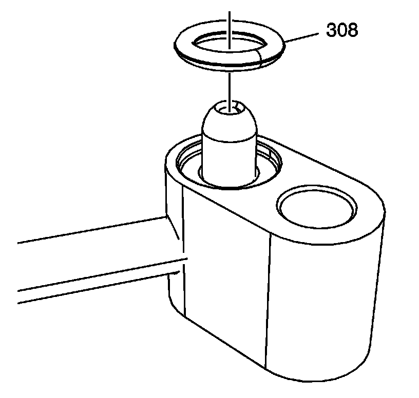
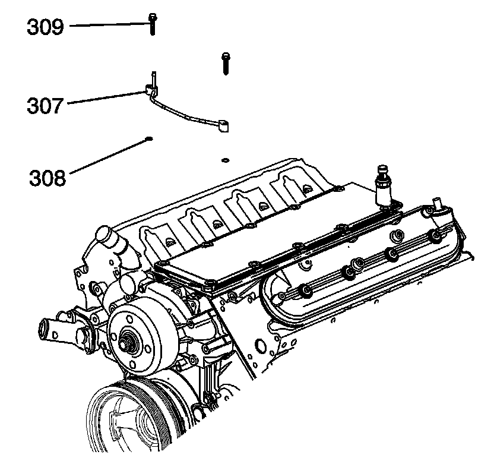
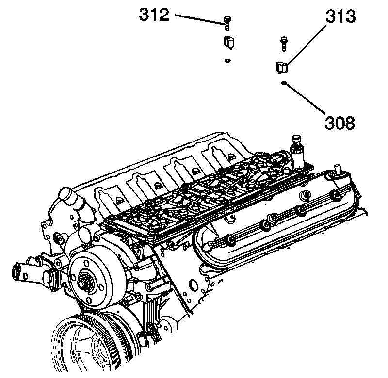
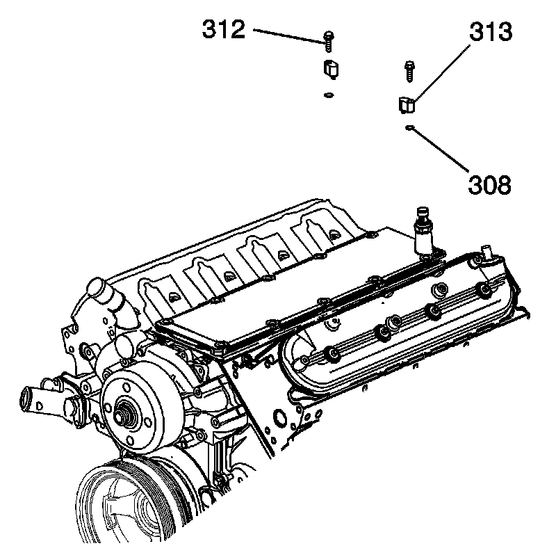

90. Engine Coolant Air Bleed Pipe and Hole Cover Installation
ENGINE COOLANT AIR BLEED PIPE AND HOLE COVER INSTALLATION (RPO L92)

Important: Position the O-ring seal onto the nipple portion of the pipe.
1. Install the seals (308) onto the engine coolant air bleed pipe and covers.

2. Install the first design pipe (307) and seals (308).
Notice: Use the correct fastener in the correct location. Replacement fasteners must be the correct part number for that application. Fasteners requiring replacement or fasteners requiring the use of thread locking compound or sealant are identified in the service procedure. Do not use paints, lubricants, or corrosion inhibitors on fasteners or fastener joint surfaces unless specified. These coatings affect fastener torque and joint clamping force and may damage the fastener. Use the correct tightening sequence and specifications when installing fasteners in order to avoid damage to parts and systems.
3. Install the bolts (309).
Tighten
Bolts to 12 Nm (106 lb in).

4. Install the first design engine covers (313) and seals (308).
5. Install the bolts (312).
Tighten
Cover bolts to 12 Nm (106 lb in).
6. Install the second design pipe (307) and seals (308).
7. Install the bolts (309).
Tighten
Bolts to 12 Nm (106 lb in).

8. Install the second design engine covers (313) and seals (308).
9. Install the bolts (312).
Tighten
Bolts to 12 Nm (106 lb in).